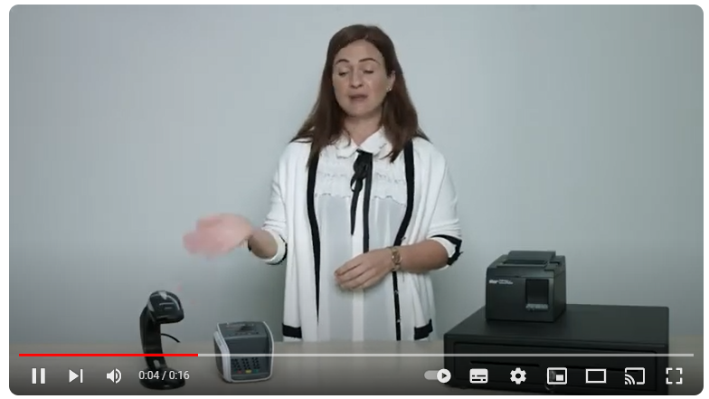
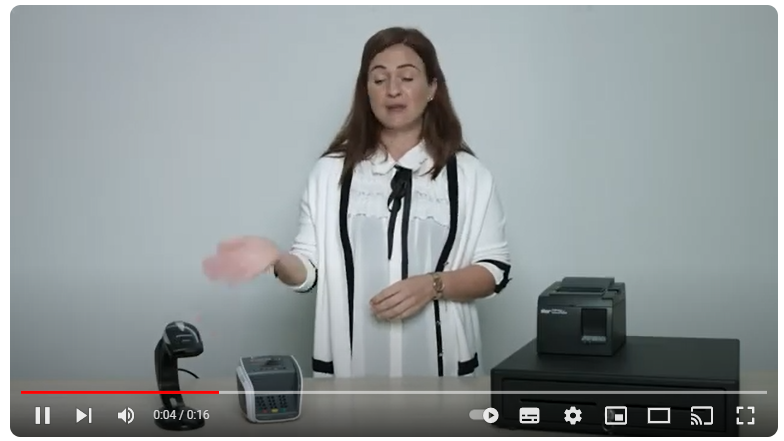

Randapparatuur verwijst naar externe apparaten die worden gebruikt om computers en digitale apparaten aan te vullen en te verbeteren. Deze apparaten voegen functionaliteit toe aan computers en stellen gebruikers in staat om gegevens in te voeren, uitvoer te ontvangen en specifieke taken uit te voeren. Ze variëren van eenvoudige invoerapparaten zoals toetsenborden en muizen tot complexe uitvoerapparaten zoals printers en monitoren.
Toetsenborden en muizen zijn enkele van de meest gebruikte invoerapparaten. Toetsenborden bieden een handige manier om tekst en opdrachten in te voeren, terwijl muizen worden gebruikt om de cursor op het computerscherm te besturen en te klikken op objecten en menu's. Monitoren, ook wel beeldschermen genoemd, dienen als uitvoerapparaten en geven visuele informatie weer, variërend van tekst tot afbeeldingen en video's.
Printers zijn essentiële uitvoerapparaten die digitale inhoud op fysiek papier kunnen afdrukken, waardoor documenten en afbeeldingen tastbaar worden. Scanners fungeren als invoerapparaten door het digitaliseren van fysieke documenten en afbeeldingen en ze om te zetten in digitale bestanden die kunnen worden opgeslagen en bewerkt op een computer. Samen dragen deze randapparaten bij aan de veelzijdigheid van moderne computers en vergroten ze de mogelijkheden voor gebruikers om te communiceren, te creëren en informatie te verwerken.
 Kijk hieronder voor extra filmpje randapparatuur

Kijk hieronder voor extra filmpje randapparatuur
